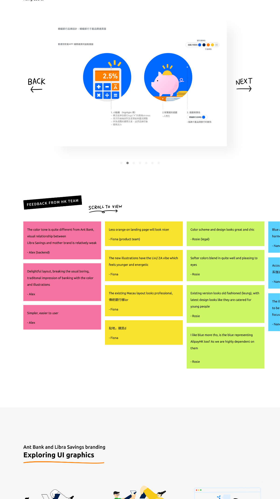

1. Localized user experience: from Macau to Hong Kong version Context
Libra Saving was first launched in Macau in late 2018, with the MVP version built by Hangzhou product design team. The Hong Kong version is hence a perfect timing for anchoring both visual direction and user journey that suits the preferences of Hong Kong users.
Feedback from Hong Kong colleagues is highly appreciated as they represent a small sector of local users; so I tried to initiate regular design updates (e.g. in the form of PDF file) as shown on the right, then collect feedback face-to-face or via DingTalk.

Fig. 01: PDF design preview circulated to HK colleagues, plus the sticky-note feedback wall used to gather face-to-face and DingTalk feedback.